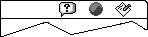
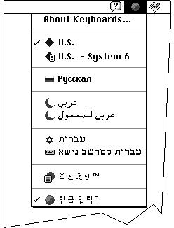
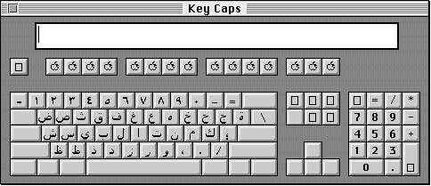

How the User Switches Among Script Systems
The script system for display of text is controlled by the application or by the system, based on which graphics port is active, which font is the current font, and what the states of the font force flag and international resources selection flag are.The script system for text input, the keyboard script, is controlled by the user, either explicitly through a menu selection, or implicitly through choosing a font or selecting or clicking in displayed text of a particular script system. This section summarizes how the keyboard script is selected; for more complete information, see the discussions of keyboard settings and synchronization in the chapter "Script Manager" in this book.
In any localized version of system software in which more than one script system is present, a small icon called a keyboard icon appears on the right side of the menu bar. Figure 1-60 shows the keyboard icon for the Korean script system, to the left of the application icon and to the right of the Help menu icon.
Figure 1-60 Menu bar with keyboard icon

This symbol indicates which keyboard script, as represented by a keyboard layout or input method, is currently being used for text input. For example, the Arabic keyboard is represented by a crescent, the Hebrew keyboard by a Star of David, and common European keyboards by flags or other appropriate symbols. The Japanese input method is represented by an Apple icon in front of a rising sun; Chinese by a coin (Simplified) or a pot called a Ding (Traditional); Korean by the circular yin-yang symbol. The default Roman keyboard is represented by a blue diamond, except on versions of system software localized for the United States, in which it is represented by a U.S. flag. Figure 1-61 gives some examples of keyboard icons and input-method icons. Color Plate 4 shows a larger set of keyboard icons in color.Figure 1-61 Keyboard icons and input-method icons
The keyboard icon serves as the title for the Keyboard menu; the user can click the keyboard icon to pull down the Keyboard menu. The Keyboard menu shows all keyboard layouts and input methods for all available keyboard scripts. The user makes a selection from the Keyboard menu in order to change the keyboard script, or to select among different keyboard layouts or input methods within a given script. See Figure 1-62.

The Operating System provides keyboard equivalents for switching among script systems. In system software localized for the U.S., for example, if the user presses Command-Space bar, the Operating System switches the keyboard script to the "next" script system, meaning the default keyboard layout or input method for the next script system listed (down) the Keyboard menu. If the user presses Command-Option-Space bar, the Operating System switches to the next keyboard layout or input method within the current script system.To see how the current keyboard layout functions, the user can select the Key Caps desk accessory. Whenever the keyboard script or keyboard layout changes, the Key Caps display changes to reflect the new character set and its arrangement on the keyboard. See Figure 1-63.

- Application-Controlled Switching
- Your application must synchronize the current font with the keyboard script whenever you are displaying characters as the user enters them. If the user changes fonts, you need to automatically change the keyboard script to correspond to the new font. Conversely, if the user changes keyboard scripts, you need to change the font appropriately before displaying the next character typed. Failure to do so can lead to incorrect text display. See "Font and Keyboard Synchronization" on page 1-90.